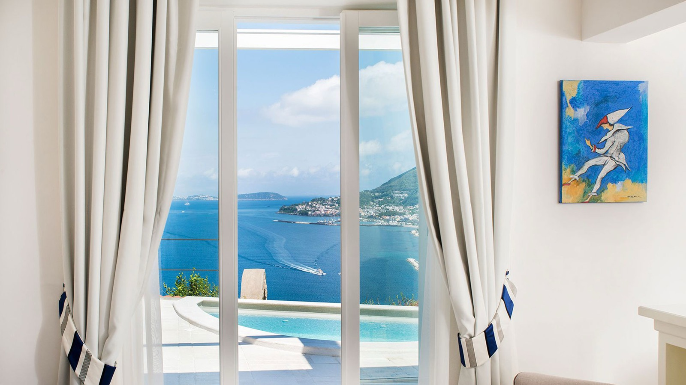
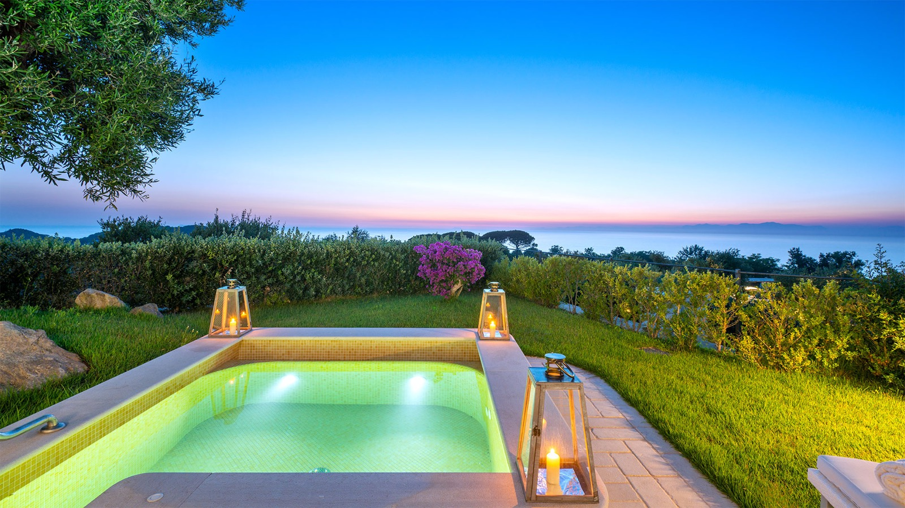
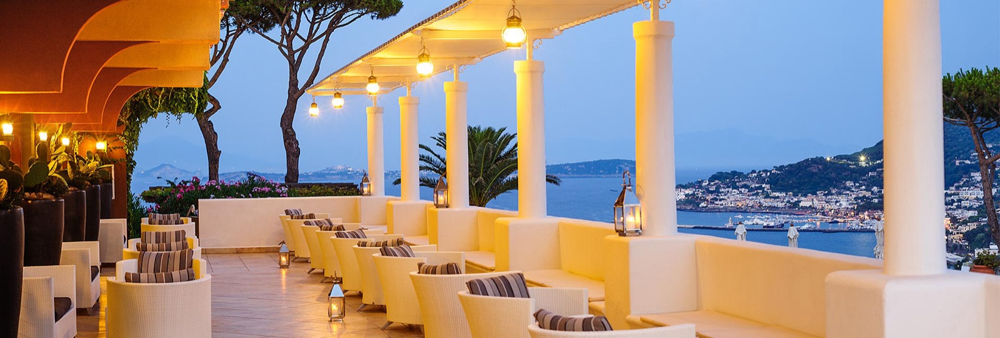

San Montano, avis : le premier Relais & Châteaux d'Ischia
Sur le promontoire du Monte Vico, au-dessus de Lacco Ameno, onze piscines thermales descendent vers le golfe de Naples. Depuis décembre 2025, la maison est la seule de l'île à porter l'écusson Relais & Châteaux. Et sa suite la plus chère occupe un ancien phare militaire.

L'une des onze piscines du domaine, en terrasse au-dessus de la baie de San Montano. La pierre claire et les baies en plein cintre sont la signature du resort. Photo : San Montano Resort & Spa, site officiel.
TL;DR : l'essentielScore LMHS 9,2/10, Indice Dolce Vita 4,8/5
- La distinction. Entré chez Relais & Châteaux en décembre 2025, le San Montano est la première et la seule adresse de l'association sur l'île d'Ischia. Sur 580 maisons dans le monde, l'île n'en comptait aucune jusque-là.
- Le thermalisme. Onze piscines thermales extérieures alimentées par les sources volcaniques de l'île, un Ocean Blue Spa et, depuis 2026, un partenariat avec la marque toscane Seed to Skin.
- La pièce rare. La Lighthouse Suite occupe un ancien phare militaire au point le plus haut du promontoire : 160 m² intérieurs, 800 m² de jardin privatif, piscine thermale privée et vue à 360 degrés sur le golfe de Naples et les îles Pontines.
Ce que cet avis ne fait pas : nous n'avons pas dormi sur place. C'est un avis documentaire, établi sur le site officiel de l'établissement, ses communiqués et la presse professionnelle, et il le dit. Le tarif d'appel est signalé comme un ordre de grandeur, pas comme un devis.
Ischia, l'autre île du golfe de Naples
Tout le monde connaît Capri. Presque personne, en France, ne sait qu'à quelques milles de là s'étend une île plus de quatre fois plus grande : 46 km² contre 10, une population qui vit à l'année, des vignobles sur les pentes du Monte Epomeo et des villages de pêcheurs qui ne ferment pas en octobre. Ischia n'est pas la petite sœur de Capri, c'est son contraire : moins de vitrines, plus de vie.
Sa singularité est géologique. L'île est un volcan, et ses sources thermales sont exploitées depuis l'Antiquité : les Romains y venaient déjà, les aristocrates napolitains y ont bâti leurs villégiatures, et les parcs thermaux, dont le Negombo voisin, font aujourd'hui partie du quotidien insulaire. C'est ce socle-là, et pas la mode, qui explique qu'un resort comme le San Montano puisse aligner onze bassins alimentés par la terre elle-même.
On y accède depuis Naples, en ferry ou en hydroglisseur au départ du Molo Beverello, entre cinquante minutes et une heure trente selon le bateau, avec le Vésuve par le travers et Procida en chemin. Du port d'Ischia, comptez un quart d'heure de route jusqu'à Lacco Ameno.
Une maison de famille sur le Monte Vico
Le San Montano n'est pas une création récente. L'hôtel a ouvert dans les années 1970, et c'est en 2008 que la famille De Siano l'a racheté puis porté au niveau où il se trouve aujourd'hui. La nuance a son importance : ce que la maison vend n'est pas un concept lancé il y a quinze ans, c'est une reprise patiente, par des hôteliers de l'île, d'un établissement qui existait déjà.
Le domaine occupe le promontoire du Monte Vico, au-dessus de la baie de San Montano, et se déploie en terrasses sur environ trois hectares de parc méditerranéen, soit les sept acres que la maison annonce en anglais. Il compte 65 chambres et suites, onze piscines thermales extérieures et des jacuzzis, quatre adresses de restauration, un beach club sur la plage en contrebas et deux vedettes rapides privées. La vue porte sur le golfe de Naples, le Vésuve et, par temps clair, jusqu'aux îles Pontines.
En décembre 2025, l'établissement est entré chez Relais & Châteaux, association fondée en 1954 qui réunit environ 580 maisons indépendantes. C'est la première et la seule d'Ischia, ce qui, sur une île qui compte des dizaines d'hôtels thermaux, n'est pas une distinction de plus mais une distinction unique.
Soixante-cinq clés, et pas une sans extérieur

Le principe de la maison en une image : chaque clé regarde dehors. Photo : San Montano Resort & Spa, site officiel.
La gamme monte de la Comfort Garden View à la villa privée, en passant par les Side Sea View, Superior Front Sea View, Deluxe Sea View et une série de Junior Suites. Au-dessus, les suites portent des noms de paysage plutôt que des numéros de catégorie : Vesuvio, Ischia Sunset, Amalfi Sunrise, Olea, Zagara, et la Lighthouse. La suite Vesuvio est la nouveauté de la saison 2026.
Le point commun est simple et c'est le meilleur argument de la maison : toutes les clés disposent d'un extérieur privatif, balcon, terrasse ou jardin selon la catégorie. Sur un promontoire, cela veut dire que personne ne dort dans une chambre qui tourne le dos au paysage. Le vocabulaire décoratif reste méditerranéen et sobre, céramique, volumes clairs, arcs en plein cintre, sans surenchère folklorique.
La Lighthouse Suite, dans un ancien phare militaire

Un bassin thermal privatif à la tombée du jour. Photo : San Montano Resort & Spa, site officiel.
C'est la pièce que la maison a ajoutée en 2025, et elle mérite son étage à part. La Lighthouse Suite occupe un ancien phare militaire, au point culminant du promontoire. Les chiffres publiés par l'établissement : 160 m² intérieurs, deux chambres de 45 et 25 m², un salon de 90 m² avec coin télévision et cuisine, et 800 m² de jardin privatif avec sa propre piscine thermale. La vue est à 360 degrés, sur le golfe de Naples d'un côté et les îles Pontines de l'autre.
Elle est signée Rino Gambardella et Claudio Pulicati, les architectes du Borgo Santandrea, sur la côte amalfitaine, qui est la propriété sœur du San Montano et non un simple chantier voisin. Cela se voit : même science du perchement, même refus du décor pour le décor.
Onze bassins thermaux, et un spa qui a changé de partenaire
C'est l'axe le plus fort de la maison, et le plus difficile à copier ailleurs. Le parc thermal aligne onze piscines extérieures et des jacuzzis, alimentés par les sources volcaniques de l'île à des températures échelonnées, ce qui permet un parcours complet sans jamais sortir du domaine. L'Ocean Blue Spa ouvre sur la mer et complète l'ensemble avec des soins fondés sur les boues volcaniques et les eaux thermales d'Ischia.
La nouveauté de 2026 est un partenariat avec Seed to Skin, la marque de soins toscane, intégrée à la carte du spa. C'est le genre de mouvement qui dit ce qu'une maison veut devenir : la cosmétique d'auteur vient s'ajouter au thermalisme brut, et non le remplacer.
Quatre adresses, une seule cuisine de Campanie

Le Sunset Lounge à l'heure bleue, au-dessus de Lacco Ameno. Photo : San Montano Resort & Spa, site officiel.
La restauration se répartit en quatre lieux, dont les noms exacts méritent d'être donnés parce qu'ils circulent déformés : Franco's Restaurant pour le déjeuner en terrasse, La Veranda Restaurant pour le dîner face à la crique, Acropoli Pizza & Bar près de la piscine principale, et le Sunset Lounge pour l'aperitivo. La cuisine reste campanienne, poissons, pâtes, pizza napolitaine, produits de l'île, sans prétention gastronomique affichée.
La fiche LMHS détaillée
Notre fiche décompose l'établissement en cinq axes de poids égal, choisis selon ce qu'il propose réellement. La note globale est leur moyenne simple, et vous pouvez la recalculer.
| Axe | Note | Ce qui la justifie |
|---|---|---|
| Site et vue | 9,5/10 | Promontoire du Monte Vico, vue à 360 degrés du Vésuve aux îles Pontines, aucune clé sans extérieur |
| Spa et thermalisme | 9,5/10 | Sources volcaniques de l'île, boues thermales, Ocean Blue Spa, partenariat Seed to Skin depuis 2026 |
| Jardins et piscines | 9,5/10 | Onze bassins thermaux en terrasses sur environ trois hectares, plus jacuzzis et beach club |
| Table | 8,5/10 | Quatre adresses complémentaires et bien réparties dans la journée, mais aucune distinction gastronomique |
| Rapport prix-expérience | 9,0/10 | Le tarif d'appel place la maison haut, mais l'accès au parc thermal, à la plage et aux bassins est compris |
Score fiche LMHS : 9,2 / 10 · (9,5 + 9,5 + 9,5 + 8,5 + 9,0) ÷ 5 = 9,2 · Relevés du 12 août 2026, sur sources officielles et documentaires, sans séjour de contrôle.
Pour situer ce 9,2 : la maison arrive à égalité avec le Château Saint-Jean et derrière Monteverdi Tuscany (9,4/10) et la Villa Florentine (9,3/10). Elle devance le Château du Portereau et The Romanos, tous deux à 9,1/10. Nous donnons ce repère plutôt qu'un superlatif : une note ne veut rien dire si l'on ne sait pas ce qu'elle bat.
L'Indice Dolce Vita, et ce qu'il mesure
Cet avis ouvre un indicateur propriétaire que la maison rendait pertinent. L'Indice Dolce Vita LMHS, noté sur 5, mesure cinq marqueurs vérifiables, et rien d'autre :
- L'ancrage insulaire : ce que la maison doit à la géologie et aux produits de son île, et non à un catalogue international.
- La part du dehors : proportion de clés avec extérieur privatif, et part de la journée qui se passe réellement à l'air libre.
- Le rythme : accès libre aux installations, absence de créneaux imposés, horaires souples.
- La table régionale : produits de Campanie, cuisine locale assumée plutôt que carte internationale.
- L'exploitation indépendante : maison de famille ou opérateur de chaîne, transmission ou management contract.
Le San Montano obtient 4,8/5. Il perd son dernier dixième sur la table, excellente mais sans signature identifiable, et non sur l'esprit du lieu : cinq bassins volcaniques, une famille ischienne aux commandes depuis 2008 et un extérieur pour chaque chambre alignent quatre marqueurs sur cinq au maximum.
Le bémol LMHS : c'est un resort, avec ce que cela suppose. Soixante-cinq clés et onze bassins font, en haute saison, une fréquentation que l'on ressent aux abords de la piscine principale, et la maison n'est pas ouverte à l'année. La table, ensuite, est généreuse mais ne prétend à aucune distinction, ce qui se remarque au niveau de prix pratiqué : à ce tarif, plusieurs concurrents méditerranéens alignent une étoile. Enfin, tout passe par le bateau : une mer formée un jour de départ et le programme se réorganise.Ce que coûte une nuit, et ce que nous n'avons pas vérifié
L'établissement ne publie pas de grille tarifaire sur son site. Les moteurs de réservation consultés le 12 août 2026 donnent un tarif d'appel de l'ordre de 600 € la nuit pour la saison en cours. Nous le publions comme un ordre de grandeur, pas comme un prix ferme : sur une île à saison courte, l'écart entre juin et août est considérable, et seul un devis nominatif fait foi.
Deux choses valent d'être demandées à la réservation, parce qu'elles changent le calcul : les dates exactes d'ouverture de la saison, la maison ne fonctionnant pas à l'année, et ce que couvre l'accès au parc thermal et au beach club selon la catégorie de chambre. Sur un séjour de plusieurs nuits, c'est cette seconde ligne qui décide du budget réel, comme nous le détaillons dans notre page week-end spa.
Le mot de SwannUne île entière attendait son premier Relais & Châteaux
Le fait marquant de cette adresse n'est pas la piscine à débordement, ni même le phare devenu suite. C'est qu'Ischia, île thermale depuis les Romains, couverte d'hôtels de cure et de parcs volcaniques, n'avait aucun Relais & Châteaux avant décembre 2025. L'association compte 580 maisons dans le monde et n'en avait pas une seule ici, alors qu'elle en aligne plusieurs sur la côte amalfitaine, à une heure de bateau. Ce que dit cette entrée, c'est moins la promotion d'un hôtel que le rattrapage d'une île entière, trop longtemps réduite au thermalisme de masse par ceux qui ne s'y étaient pas rendus. Une famille de l'île a mis dix-sept ans à obtenir cette reconnaissance sur un établissement des années 1970. C'est le genre de patience que ce métier récompense rarement, et qui mérite d'être signalée.
Swann Bertaud, rédacteur hôtellerie de luxe
Infos pratiques et accès
- Adresse : Via Nuova Montevico 26, 80076 Lacco Ameno, île d'Ischia, Naples, Italie
- Téléphone : +39 081 99 40 33
- Courriel : info@sanmontano.com
- Classement : 5 étoiles, membre de Relais & Châteaux depuis décembre 2025 et de Virtuoso
- Capacité : 65 chambres et suites, plus des villas privées
- Bien-être : onze piscines thermales extérieures, jacuzzis, Ocean Blue Spa, salle de sport intérieure et extérieure
- Restauration : Franco's Restaurant, La Veranda Restaurant, Acropoli Pizza & Bar, Sunset Lounge
- Services : beach club sur la plage de San Montano, navette, deux vedettes rapides privées, parking gratuit
Depuis Naples, embarquement au Molo Beverello pour Ischia, de cinquante minutes à une heure trente selon le bateau, puis un quart d'heure de route jusqu'à Lacco Ameno. Autour, l'île donne de vraies raisons de sortir du domaine : le parc thermal Negombo en contrebas, les jardins de La Mortella à dix minutes, le village de Sant'Angelo et la plage des Maronti et ses fumerolles au sud, le Château Aragonais à l'est, et le Monte Epomeo pour qui marche.
FAQ : San Montano Resort & Spa
Quelle note LMHS le San Montano obtient-il ?
9,2/10 à la fiche LMHS, moyenne simple de cinq axes de poids égal : site et vue 9,5, spa et thermalisme 9,5, jardins et piscines 9,5, table 8,5, rapport prix-expérience 9,0. C'est à égalité avec le Château Saint-Jean et derrière Monteverdi Tuscany (9,4) et la Villa Florentine de Lyon (9,3). L'établissement obtient par ailleurs un Indice Dolce Vita de 4,8/5.
Depuis quand le San Montano est-il Relais & Châteaux ?
Depuis décembre 2025. C'est la première et la seule adresse de l'association sur l'île d'Ischia, sur environ 580 maisons dans le monde. Le resort est également membre de Virtuoso.
Combien de chambres et de piscines compte le San Montano ?
65 chambres et suites, auxquelles s'ajoutent des villas privées, et onze piscines thermales extérieures alimentées par les sources volcaniques de l'île, complétées de jacuzzis. Le parc méditerranéen couvre environ trois hectares, soit les sept acres annoncés en anglais par l'établissement. Toutes les clés disposent d'un extérieur privatif.
Qu'est-ce que la Lighthouse Suite ?
C'est la suite la plus prestigieuse de la maison, installée dans un ancien phare militaire au point le plus haut du promontoire : 160 m² intérieurs, deux chambres de 45 et 25 m², un salon de 90 m² avec cuisine, 800 m² de jardin privatif, une piscine thermale privée et une vue à 360 degrés sur le golfe de Naples et les îles Pontines. Elle a été dessinée par Rino Gambardella et Claudio Pulicati, architectes du Borgo Santandrea, propriété sœur sur la côte amalfitaine.
Le spa utilise-t-il vraiment les eaux thermales d'Ischia ?
Oui. Les onze piscines extérieures sont alimentées par les sources volcaniques de l'île, exploitées depuis l'Antiquité, et l'Ocean Blue Spa fonde ses rituels sur les boues volcaniques et les eaux thermales. Depuis 2026, la carte de soins intègre un partenariat avec la marque toscane Seed to Skin.
Quels sont les restaurants du San Montano ?
Quatre adresses : Franco's Restaurant pour le déjeuner en terrasse, La Veranda Restaurant pour le dîner face à la crique, Acropoli Pizza & Bar près de la piscine principale, et le Sunset Lounge pour l'aperitivo. Aucune ne porte de distinction gastronomique, ce qui explique l'axe le plus bas de notre fiche.
Quel est le tarif d'une nuit au San Montano ?
L'établissement ne publie pas de grille sur son site. Les moteurs de réservation consultés le 12 août 2026 donnent un tarif d'appel de l'ordre de 600 € pour la saison en cours. Nous le publions comme un ordre de grandeur : sur une île à saison courte, l'écart entre juin et août est considérable, et seul un devis nominatif fait foi.
Ischia est-elle plus grande que Capri ?
Nettement : 46 km² contre une dizaine, soit plus de quatre fois la surface. Ischia est habitée à l'année, cultivée, et son économie repose sur le thermalisme volcanique autant que sur le tourisme. C'est l'inverse du modèle caprais, et c'est ce qui explique qu'elle compte des dizaines d'hôtels thermaux.
Méthode et sources
Avis établi à la fiche LMHS sur 10, moyenne simple de cinq axes de poids égal, doublée de l'Indice Dolce Vita sur 5, indicateur propriétaire ouvert par cet avis et défini par cinq marqueurs dans le corps de l'article. Aucun séjour de contrôle n'a été effectué, et nous ne prétendons pas le contraire : ni nuit sur place, ni repas, ni soin au spa. Capacités, équipements, noms des restaurants, surfaces de la Lighthouse Suite, date d'entrée chez Relais & Châteaux et historique de la propriété ont été relevés le 12 août 2026 sur le site officiel de l'établissement et sur ses communiqués repris par la presse professionnelle hôtelière, puis recoupés. Le tarif est donné comme un ordre de grandeur, relevé à la même date sur les moteurs de réservation, et signalé comme tel. Photographies : site officiel du San Montano Resort & Spa. Aucun partenariat commercial, aucune affiliation, aucun séjour offert.
Sources utiles
- San Montano Resort & Spa, site officiel
- San Montano, la Lighthouse Suite
- Hospitality Net, l'entrée du San Montano chez Relais & Châteaux
- Relais & Châteaux, l'association
Pour aller plus loin
- Monteverdi Tuscany, notre autre avis italien, et la note la plus haute que nous ayons attribuée hors de France
- Château Saint-Jean, Montluçon, l'autre 9,2/10 de nos avis
- The Romanos, Costa Navarino, un resort méditerranéen de même échelle, en Grèce
- Les meilleurs hôtels 5 étoiles en Sardaigne, notre sélection italienne insulaire
- Week-end spa en France, et ce que deux nuits coûtent réellement
- Notre méthode, les grilles de notation et le catalogue des indices